place
1.Coorg
 The view of coffee plantations spread over acres is a joyous sight. Drinking a hot cup of the beverage while chilling amidst the lush green plantation makes it all the more pleasurable. Life here is laid-back and peaceful something city dwellers will appreciate.
White water rafting on river Cauvery and trekking and hiking on Mt. Tadiyendamol are must-do for those who love adrenaline rush. The Tibetan settlement in Bylakuppe with smiling monks, dazzling Buddha sculptures and paintings is a must-visit in this region.
Imagine strolling through thick forests, scenic waterfalls and acres of verdant coffee plantations, where the fresh aroma of coffee and spices heighten your senses, and the views of stunning pastoral hills take your breath away. Coorg is often referred to as the Scotland of India. Officially known as Kodagu, it is one of the most accessible and popular hill stations in South India.
Best Time to Visit Coorg:October - February
Top Tourist Attractions:Abbey Falls, Talakaveri, Raja's seat, Golden Temple, Pushpagiri Wildlife Sanctuary, Madikeri Fort, Virajpet
Things to Do in Coorg:Elephant safari at Dubare Elephant Camp, River Rafting, Fishing at Kaveri River
The view of coffee plantations spread over acres is a joyous sight. Drinking a hot cup of the beverage while chilling amidst the lush green plantation makes it all the more pleasurable. Life here is laid-back and peaceful something city dwellers will appreciate.
White water rafting on river Cauvery and trekking and hiking on Mt. Tadiyendamol are must-do for those who love adrenaline rush. The Tibetan settlement in Bylakuppe with smiling monks, dazzling Buddha sculptures and paintings is a must-visit in this region.
Imagine strolling through thick forests, scenic waterfalls and acres of verdant coffee plantations, where the fresh aroma of coffee and spices heighten your senses, and the views of stunning pastoral hills take your breath away. Coorg is often referred to as the Scotland of India. Officially known as Kodagu, it is one of the most accessible and popular hill stations in South India.
Best Time to Visit Coorg:October - February
Top Tourist Attractions:Abbey Falls, Talakaveri, Raja's seat, Golden Temple, Pushpagiri Wildlife Sanctuary, Madikeri Fort, Virajpet
Things to Do in Coorg:Elephant safari at Dubare Elephant Camp, River Rafting, Fishing at Kaveri River
2.Wayanad
 Filled with an alluring aroma of fresh spices, rich wildlife, and lush greenery, Wayanad is a city in Kerala. With good road connectivity and captivating beauty, Wayanad tourism is one of the best things you could explore in Kerala. The places to visit in Wayanad tempt thousands of tourists all through the year to visit the city. From magnificent caves and waterfalls to cosy homestays and resorts, Wayanad has it all.
Wayanad famous for its wide variety of flora and fauna along with the serene and peaceful hills of the Western Ghats. In short, the city is a perfect getaway for weekends.
Best Time to Visit Wayanad:November to February
Top Tourist Attractions:Edakkal Caves, Pookode Lake, Muthanga Wildlife Sanctuary, Kuruva Island, Chembra Peak
Things to Do in Wayanad:Adventure, Hills & Mountains, Wildlife, Trek, Relaxation, Romantic
Filled with an alluring aroma of fresh spices, rich wildlife, and lush greenery, Wayanad is a city in Kerala. With good road connectivity and captivating beauty, Wayanad tourism is one of the best things you could explore in Kerala. The places to visit in Wayanad tempt thousands of tourists all through the year to visit the city. From magnificent caves and waterfalls to cosy homestays and resorts, Wayanad has it all.
Wayanad famous for its wide variety of flora and fauna along with the serene and peaceful hills of the Western Ghats. In short, the city is a perfect getaway for weekends.
Best Time to Visit Wayanad:November to February
Top Tourist Attractions:Edakkal Caves, Pookode Lake, Muthanga Wildlife Sanctuary, Kuruva Island, Chembra Peak
Things to Do in Wayanad:Adventure, Hills & Mountains, Wildlife, Trek, Relaxation, Romantic
3.Kodaikanal
 Kodaikanal hill station, in the Palani Hills of the Western Ghats, is a picture-perfect hill station. Due to its breathtaking beauty and widespread appeal, Kodaikanal hills has been dubbed the Princess of hill stations. The town of Dindigul in Tamil Nadu is on a plateau at an elevation of 2,133 m above sea level. Kodaikanal tourist places are situated between the Parappar and Gundar Valleys. There are lush green parks, crystal-clear lakes and temples in Kodaikanal that you can explore.
Best Time to Visit Kodaikanal:October - February
Top Tourist Attractions:Bear Shola Falls, Coakers Walk, Berijam Lake, Lutheran Church, Kodai Lake
Things to Do in Kodaikanal:Adventure, Hills & Mountains, Wildlife, Memorable Experiences, Relaxation, Romantic
Kodaikanal hill station, in the Palani Hills of the Western Ghats, is a picture-perfect hill station. Due to its breathtaking beauty and widespread appeal, Kodaikanal hills has been dubbed the Princess of hill stations. The town of Dindigul in Tamil Nadu is on a plateau at an elevation of 2,133 m above sea level. Kodaikanal tourist places are situated between the Parappar and Gundar Valleys. There are lush green parks, crystal-clear lakes and temples in Kodaikanal that you can explore.
Best Time to Visit Kodaikanal:October - February
Top Tourist Attractions:Bear Shola Falls, Coakers Walk, Berijam Lake, Lutheran Church, Kodai Lake
Things to Do in Kodaikanal:Adventure, Hills & Mountains, Wildlife, Memorable Experiences, Relaxation, Romantic
4.Ooty and Coonoor
 Famous for producing the Nilgiri tea, Coonoor is one of the most beautiful hill stations situated in the Nilgiri hills in Western Ghats, in the Indian state of Tamil Nadu. Located at an altitude of over 6000 ft ASL, Coonoor is the quieter cousin of otherwise famous and busier Ooty. It is situated around 20 kilometres from Ooty.
Coonoor has the beauty of tea plantations, valleys, ravines and waterfalls all around. There are quite a few trails for trekking and hiking in the surrounding hills of Western Ghats around Coonoor.
The place is divided between Upper Coonoor and Lower Coonoor. Whereas Lower Coonoor is a city centre with most tourist crowds, Upper Coonoor is far from traffic and crowd and is best for people who wish to stay in the midst of hills. Birdwatching can be the best pastime as the hill station is a birder’s paradise.
Best Time to Visit Ooty and Coonoor:December to January & May to June
Top Tourist Attractions:Catherine Falls – Marvel At The Beauty,Sim’s Park – Entertain Yourself,Droog Fort – Learn History,Heritage Train – Take A Ride,St. George’s Church – Seek Blessings,Law’s Falls – Absorb The Beauty,
Rallia Dam – Go Trekking,Dolphin’s Nose – Jaw-Dropping Views,Lady Canning’s Seat – Picturesque Views,Highfield Tea Factory – Soak The Views,Lamb’s Rock – Thrill At Its Best,Ketti Valley – Views Like None Other,Hidden Valley – Unravel The Charm,The Taj Garden Retreat – Fine Dining,
All Saints Church – Admire The Heritage,Ayurveda Retreat – Peace Out,Kattery Park – Lush Greenery,Wellington Golf Course – Oldest Golf Course,
Things to Do in Ooty and Coonoor:Adventure, Hills & Mountains, Wildlife, Memorable Experiences, Relaxation, Romantic
Famous for producing the Nilgiri tea, Coonoor is one of the most beautiful hill stations situated in the Nilgiri hills in Western Ghats, in the Indian state of Tamil Nadu. Located at an altitude of over 6000 ft ASL, Coonoor is the quieter cousin of otherwise famous and busier Ooty. It is situated around 20 kilometres from Ooty.
Coonoor has the beauty of tea plantations, valleys, ravines and waterfalls all around. There are quite a few trails for trekking and hiking in the surrounding hills of Western Ghats around Coonoor.
The place is divided between Upper Coonoor and Lower Coonoor. Whereas Lower Coonoor is a city centre with most tourist crowds, Upper Coonoor is far from traffic and crowd and is best for people who wish to stay in the midst of hills. Birdwatching can be the best pastime as the hill station is a birder’s paradise.
Best Time to Visit Ooty and Coonoor:December to January & May to June
Top Tourist Attractions:Catherine Falls – Marvel At The Beauty,Sim’s Park – Entertain Yourself,Droog Fort – Learn History,Heritage Train – Take A Ride,St. George’s Church – Seek Blessings,Law’s Falls – Absorb The Beauty,
Rallia Dam – Go Trekking,Dolphin’s Nose – Jaw-Dropping Views,Lady Canning’s Seat – Picturesque Views,Highfield Tea Factory – Soak The Views,Lamb’s Rock – Thrill At Its Best,Ketti Valley – Views Like None Other,Hidden Valley – Unravel The Charm,The Taj Garden Retreat – Fine Dining,
All Saints Church – Admire The Heritage,Ayurveda Retreat – Peace Out,Kattery Park – Lush Greenery,Wellington Golf Course – Oldest Golf Course,
Things to Do in Ooty and Coonoor:Adventure, Hills & Mountains, Wildlife, Memorable Experiences, Relaxation, Romantic
5.Chennai
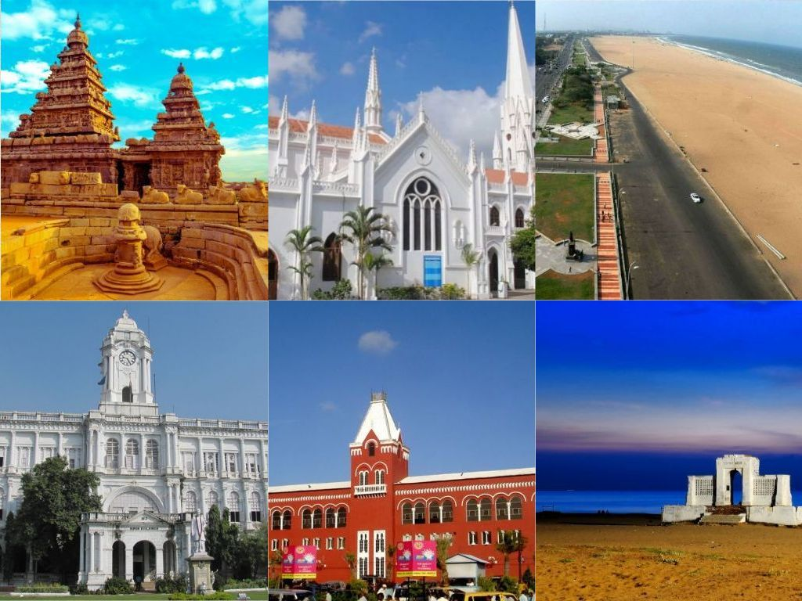
Chennai, the capital of Tamil Nadu is the gateway to many interesting places. This city is a beautiful blend of cultural extravaganza. The presence of glittering beaches, eateries, religious spots such as temples and churches, historical attractions and a lot more makes this city worth exploring.Travellers come to Chennai from all parts of the world but only use this place as a transit spot in order to visit Pondicherry, Madurai, Kanchipuram, Kochi, Varkala, and many more locations. The unique attractions of the city are often ignored because of its hustling bustling life. But Chennai is way more than that. It is an important historical city with incredible places of sightseeing.
Best Time to Visit Chennai:October - February
Top Tourist Attractions:Marina Beach,Government Museum,Nagalapuram Waterfalls,Thousand Lights Mosque,Ashtalaxmi Temple,Valluvar Kottam,Kanchipuram,Mylapore
Things to Do in Chennai:Beach Bonfire and Camping, Bird Watching near Pulicat Lake, Visiting the Marina beach, Walkthrough Thalankuppam Pier, Water sports in Muttukadu, Fun Rides in MGM Dizzee World, Heritage Tour to Royapuram Fishing Harbour and many more exciting options.
6.Gokarna
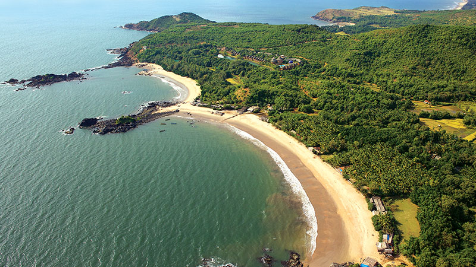
has an array of some of the most beautiful beaches you can find in the country. The destination brims with some exciting locations that offer brilliant views of the seashore facing the Arabian Sea. Many Gokarna trip ideas feature sandy beaches, lush green surroundings and rock outcrops flanked near the seashore making for an exotic and picturesque site. The extensive stretch of beaches in Gokarna places have a pleasant temperate climate. October to March is the best time to visit Gokarna. Summer is not considered the best time to visit Gokarna due to the scorching heat. If you end up Googling “places to visit near me” from Karnataka, look no further as Gokarna places bring you the amazing advantage of thrill and the relaxing environment where calm and solace are an understatement.
Best Time to Visit Gokarna:October - February
Top Tourist Attractions:Beach Yoga, Paradise Beach, Gokarna Beach, Mahabaleshwar Temple Near Gokarna, Kudle Beach
Things to Do in Gokarna:Beach, Religious, Relaxation, Pilgrimage, Romantic
7.Hampi
 Hampi was the capital of the Vijaynagar Empire, during its heyday. After the fall of the Vijaynagar empire, its importance gradually dwindled. You can visit well over 500 ancient landmarks, beautiful temples, lively street markets and captivating remains of the Vijayanagar Empire, it provides a small glimpse into the ancient history. Hampi Karnataka today is a UNESCO heritage site.
Best Time to Visit Hampi:October - February
Top Tourist Attractions:Vittala Temple, Virupaksha Temple, Coracle Ride, Rock Climbing, Hampi Bazaar
Things to Do in Hampi:Heritage
Hampi was the capital of the Vijaynagar Empire, during its heyday. After the fall of the Vijaynagar empire, its importance gradually dwindled. You can visit well over 500 ancient landmarks, beautiful temples, lively street markets and captivating remains of the Vijayanagar Empire, it provides a small glimpse into the ancient history. Hampi Karnataka today is a UNESCO heritage site.
Best Time to Visit Hampi:October - February
Top Tourist Attractions:Vittala Temple, Virupaksha Temple, Coracle Ride, Rock Climbing, Hampi Bazaar
Things to Do in Hampi:Heritage
8.Varkala
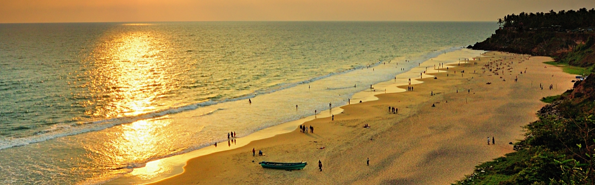
Keen on vacationing on an unspoilt beach in Gods own country, Kerala? Give the crowded, popular beach destinations a miss and head to Varkala. Temples, ashrams, springs, cliffs and beaches make up for all the places to visit in Varkala. This tranquil location brings a sense of peace to both devotees and vacationers. The golden beach and the azure Arabian Sea beside it offer a relaxing environment. The cliff overlooking the beach is covered in lush greenery. The riot of colours with the green foliage, the golden sands and the blue sea is a dream for photographers. Varkala beach is not the only attraction here. The history of Varkala dates back to 2000 years ago when the Janardhana Swamy Temple was built. The water from the natural spring here has medicinal properties while the sea offers the chance to swim and surf. The hanging cliff is just right for paragliding too. With interesting options for varied activities, the places to visit in Varkala offer a tempting vacation.
Best Time to Visit Varkala:October to March
Top Tourist Attractions:Anjengo Fort, Janardhana Swamy Temple, Thiruvambady Beach, Ponnumthuruthu Island, Kappil Lake
Things to Do in Varkala:Beach, Religious, Relaxation, Pilgrimage, Food & Culture
9.Mahabalipuram
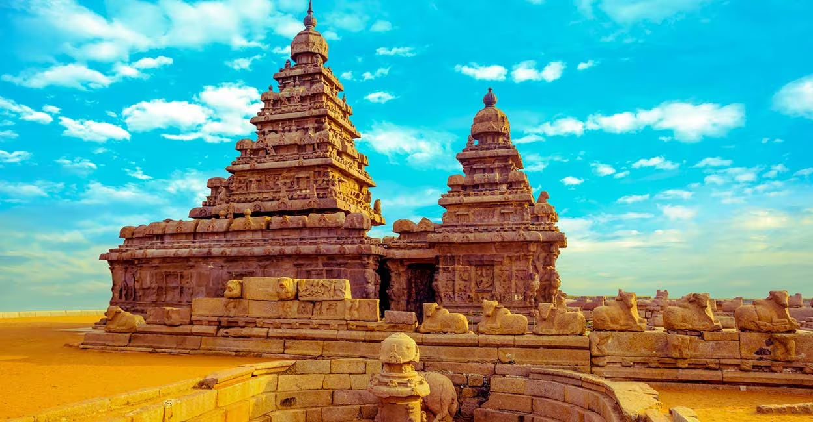
Mamallapuram, or Mahabalipuram, is a town on a strip of land between the Bay of Bengal and the Great Salt Lake, in the south Indian state of Tamil Nadu. It’s known for its temples and monuments built by the Pallava dynasty in the 7th and 8th centuries. The seafront Shore Temple comprises 3 ornate granite shrines. Krishna’s Butter Ball is a massive boulder balanced on a small hill near the Ganesha Ratha stone temple.
Best Time to Visit Mahabalipuram:October - February
Top Tourist Attractions:Tiger Cave, Mahabalipuram Lighthouse, India Seashell Museum, Shore Temple, Mahabalipuram Beach
Things to Do in Mahabalipuram:Beach, Heritage, Religious, Relaxation, Pilgrimage, Food & Culture
10.Thanjavur
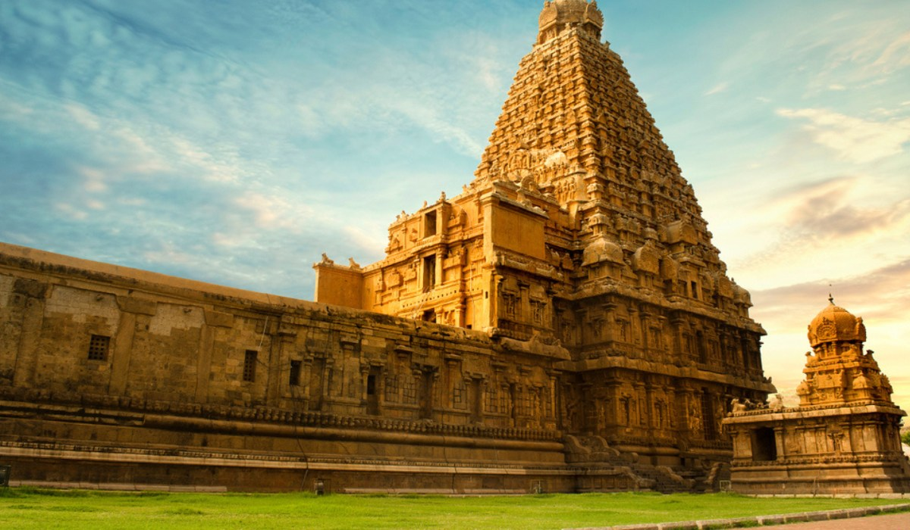
Thanjavur is a city in the south Indian state of Tamil Nadu. Its many temples include the 11th-century Brihadeeswarar Temple, a vast Chola dynasty–era complex with a frescoed interior. Thanjavur Maratha Palace is home to the centuries-old Saraswathi Mahal Library, with palm-leaf manuscripts, and Thanjavur Art Gallery, with bronze statues. Tamil University Museum displays coins, folk artifacts and musical instruments.
Best Time to Visit Thanjavur:December-February
Top Tourist Attractions:Brihadeeswara Temple,Gangaikonda Cholapuram,Brihadeeswarar Temple,Punnainallur Mariamman Koil,Thirunallar Temple.
Things to Do in Thanjavur:Heritage
11.Madurai
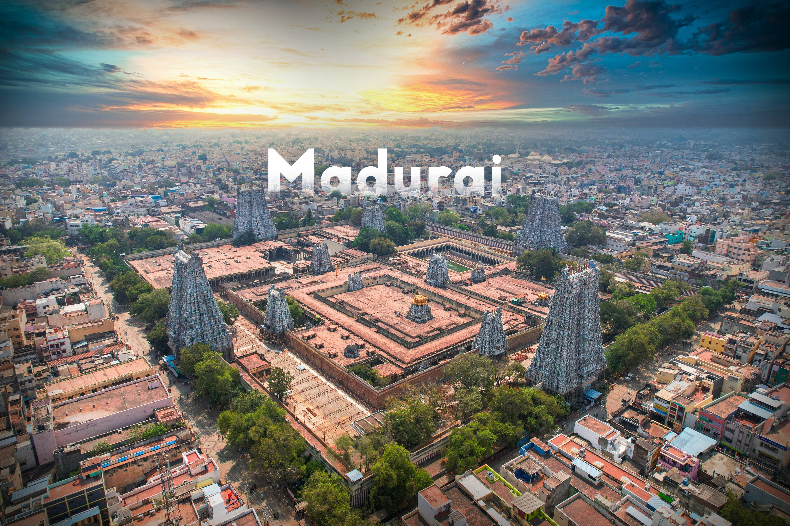
Madurai Tamil Nadu is located on the banks of the Vaigai river. The city is well known for its rich heritage, temples, and Sangams. Most of the heritage sites in Madurai city are built in the Dravidian style of architecture that takes the visitors back to that era. It is among the most outstanding Hindu pilgrimage centres in India.
Madurai city is planned in a traditional arrangement that has fivefold concentric rectangular forms with temples at the centre and encircled by important structures. The city is packed with religious masterpieces grabbing generous crowds throughout the year.
Best Time to Visit Madurai:October to March
Top Tourist Attractions:Vandiyur Mariamman Temple, Samanar Hills, Thirumalai Nayak Mahal, Kallazhagar Temple, Gandhi Memorial Museum
Things to Do in Madurai:Heritage, Religious, Pilgrimage, Food & Culture
12.Kanchipuram
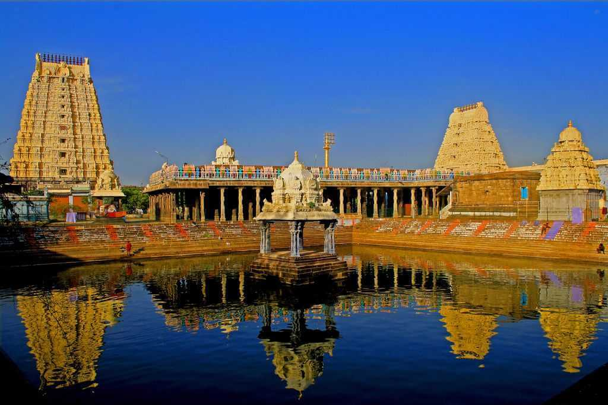
Kanchipuram, one of Tamil Nadu's oldest cities, has preserved most of its colonial architecture and ambience. Being the former capital of the Pallava rulers, the city is well-known for more than only its temples. The name "The City of Thousand Temples" has been given to Kanchipuram Tamil Nadu. One of the seven holiest locations in Hinduism, Kanchipuram attracts a large number of pilgrims and visitors every year.
Best Time to Visit Kanchipuram:October - February
Top Tourist Attractions:Kanchi Kudil, Ekambareswarar Temple, Kanchi Kamkoti Peetham, Varadharaja Perumal Temple, Kailasanathar Temple
Things to Do in Kanchipuram:Religious, Pilgrimage, Food & Culture
13.Pondicherry
 Pondicherry is the capital of the Union Territory of Pondicherry, India, now known as Puducherry. Pondicherry was a French settlement till 1954. The city is dotted with French-style houses, shops, churches and bright coloured cafés. Places to visit in Pondicherry like Sri Aurobindo Ashram and Auroville are flocked by visitors from all over the world who come here in search of spiritual bliss through yoga and meditation. Other places to visit in Pondicherry demonstrate a perfect amalgamation of French and Indian culture. Be it the nightlife, clubs and beach parties or the cafés and restaurants serving impeccable French cuisine, you will find a blend of both cultures everywhere.
Best Time to Visit Pondicherry:October - February
Top Tourist Attractions:Paradise Beach, Pondicherry, Tranquebar, Tamil Nadu, Serenity Beach, Auroville, Chunnambar Boat House
Things to Do in Pondicherry:Beach, Heritage, Food & Culture, Relaxation, Romantic
Pondicherry is the capital of the Union Territory of Pondicherry, India, now known as Puducherry. Pondicherry was a French settlement till 1954. The city is dotted with French-style houses, shops, churches and bright coloured cafés. Places to visit in Pondicherry like Sri Aurobindo Ashram and Auroville are flocked by visitors from all over the world who come here in search of spiritual bliss through yoga and meditation. Other places to visit in Pondicherry demonstrate a perfect amalgamation of French and Indian culture. Be it the nightlife, clubs and beach parties or the cafés and restaurants serving impeccable French cuisine, you will find a blend of both cultures everywhere.
Best Time to Visit Pondicherry:October - February
Top Tourist Attractions:Paradise Beach, Pondicherry, Tranquebar, Tamil Nadu, Serenity Beach, Auroville, Chunnambar Boat House
Things to Do in Pondicherry:Beach, Heritage, Food & Culture, Relaxation, Romantic
14.Munnar
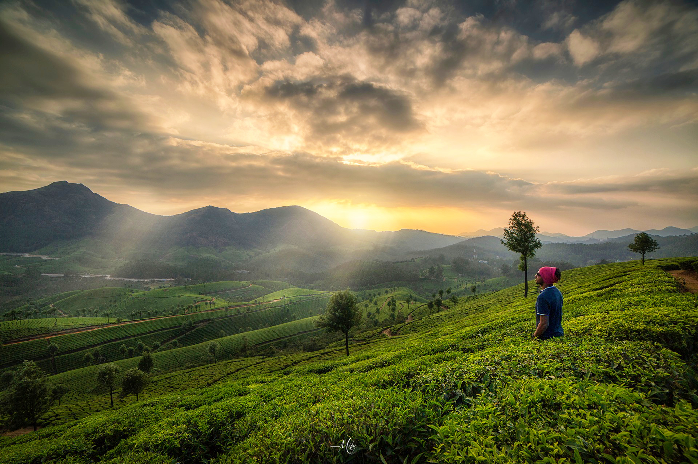
Located in the Idukki district, Munnar Kerala is a hill station that is both stunning and fascinating. This hill station may be found in the Western Ghats, a range of mountains known for its twisting terrains. Munnar gets its unusual moniker from its location at the point that also boosts Munnar tourism.
Because of its proximity to the border with Tamil Nadu, the town of Munnar shares many cultural traditions with its southern neighbour. This mountainous landscape is one reason why Kerala is so well-known worldwide as a tourist destination. The presence of Munnar resorts also make Munnar trip a popular option among honeymooners.
Best Time to Visit Munnar:December to February
Top Tourist Attractions:Pothamedu View Point, Eravikulam National Park, Kundala Dam Lake, Photo Point, Attukal Waterfalls
Things to Do in Munnar:Adventure, Hills & Mountains, Wildlife, Trek, Memorable Experiences, Relaxation, Food & Culture, Romantic, Honeymoon, Offbeat Gems
15.Kumarakom
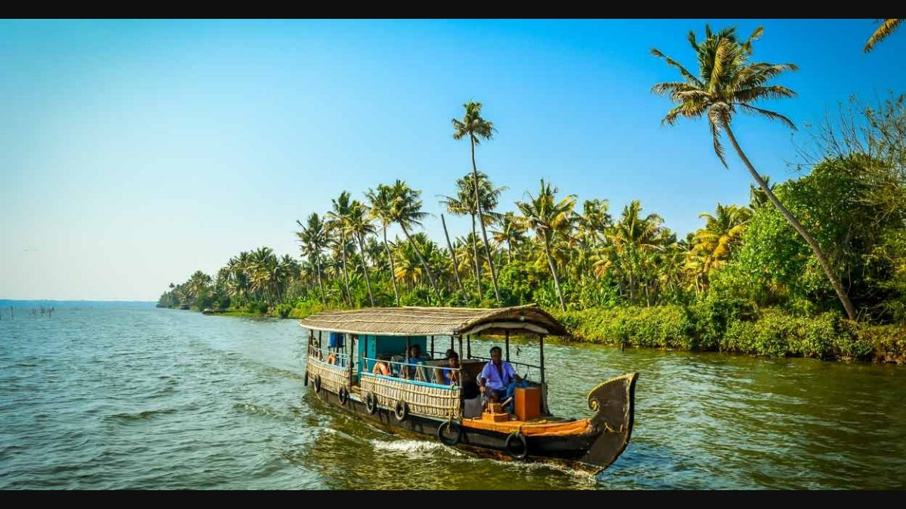
Kumarakom is a gathering of stunning little islands on the Vembanad Lake, the largest lake in South India. The city is around 70 km from Kochi. Sightseeing in Kumarakom offers a view of the emerald-green backwaters edged by paddy fields and flourishing vegetation. Kumarakom is famous for its untouched beauty and serenity. Kumarakom places to visit are the most serene offerings of Kumarakom. There are many fascinating things to see in Kumarakom, ideal for relaxation, rejuvenation, and honeymoon trips. Beaches near Kumarakom are worth visiting while exploring the city.
Best Time to Visit Kumarakom:September to February
Top Tourist Attractions:Kumarakom Bird Sanctuary, Aruvikkuzhi Waterfalls, Thirunakkara Mahadeva Temple, Kumarakom Beach, Pathiramanal Island
Things to Do in Kumarakom:Wildlife, Heritage, Memorable Experiences
16.Kochi
 Kochi (also known as Cochin) is a city in southwest India's coastal Kerala state. It has been a port since 1341, when a flood carved out its harbor and opened it to Arab, Chinese and European merchants. Sites reflecting those influences include Fort Kochi, a settlement with tiled colonial bungalows and diverse houses of worship. Cantilevered Chinese fishing nets, typical of Kochi, have been in use for centuries.
Best Time to Visit Kochi:October - February
Top Tourist Attractions:Willingdon Island, Vypeen Island, Paradesi Synagogue, Hill Palace Museum, The Mattancherry Palace
Things to Do in Kochi:Beach, Heritage, Religious, Memorable Experiences, Relaxation, Pilgrimage
Kochi (also known as Cochin) is a city in southwest India's coastal Kerala state. It has been a port since 1341, when a flood carved out its harbor and opened it to Arab, Chinese and European merchants. Sites reflecting those influences include Fort Kochi, a settlement with tiled colonial bungalows and diverse houses of worship. Cantilevered Chinese fishing nets, typical of Kochi, have been in use for centuries.
Best Time to Visit Kochi:October - February
Top Tourist Attractions:Willingdon Island, Vypeen Island, Paradesi Synagogue, Hill Palace Museum, The Mattancherry Palace
Things to Do in Kochi:Beach, Heritage, Religious, Memorable Experiences, Relaxation, Pilgrimage
17.Kanyakumari
 Kanyakumari is a coastal town in the state of Tamil Nadu on India's southern tip. Jutting into the Laccadive Sea, the town was known as Cape Comorin during British rule and is popular for watching sunrise and sunset over the ocean. It's also a noted pilgrimage site thanks to its Bagavathi Amman Temple, dedicated to a consort of Shiva, and its Our Lady of Ransom Church, a center of Indian Catholicism.
Best Time to Visit Kanyakumari:October to March
Top Tourist Attractions:Sanguthurai Beach, Thiruvalluvar Statue, Mahatma Gandhi Memorial, Tsunami Memorial Park, Vivekananda Rock Memorial
Things to Do in Kanyakumari:Beach, Heritage, Religious, Memorable Experiences, Relaxation, Pilgrimage
Kanyakumari is a coastal town in the state of Tamil Nadu on India's southern tip. Jutting into the Laccadive Sea, the town was known as Cape Comorin during British rule and is popular for watching sunrise and sunset over the ocean. It's also a noted pilgrimage site thanks to its Bagavathi Amman Temple, dedicated to a consort of Shiva, and its Our Lady of Ransom Church, a center of Indian Catholicism.
Best Time to Visit Kanyakumari:October to March
Top Tourist Attractions:Sanguthurai Beach, Thiruvalluvar Statue, Mahatma Gandhi Memorial, Tsunami Memorial Park, Vivekananda Rock Memorial
Things to Do in Kanyakumari:Beach, Heritage, Religious, Memorable Experiences, Relaxation, Pilgrimage
18.Thekkady
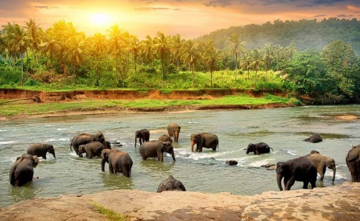
Thekkady, in the Idukki District, is one of the most popular and breathtakingly beautiful tourist spots in all of Kerala. Popular with many kinds of vacationers, Thekkady Kerela is perhaps best known for the Periyar Wildlife Sanctuary, which is a haven for hikers and animal lovers. The region is conveniently accessible from both Kerala and Tamil Nadu because of its central location. You can also book one of the properties here such as Hills and Hues Thekkady for a relaxing vacation.
Best Time to Visit Thekkady:October - February
Top Tourist Attractions:Gavi, Abrahams Spice Garden, Periyar Wildlife Sanctuary, Chellarkovil, Periyar Lake
Things to Do in Thekkady:Hills & Mountains, Wildlife, Religious, Relaxation, Pilgrimage, Food & Culture
19.Trivandrum
 Thiruvananthapuram (or Trivandrum) is the capital of the southern Indian state of Kerala. It's distinguished by its British colonial architecture and many art galleries. It’s also home to Kuthira Malika (or Puthen Malika) Palace, adorned with carved horses and displaying collections related to the Travancore royal family, whose regional capital was here from the 18th–20th centuries
Best Time to Visit Trivandrum:October - February
Top Tourist Attractions:Trivandam Padmanabhaswamy Temple, Monumental Hindu hallowed place to Vishnu, Napier Museum,Attukal Temple, Kowdiar Palace, Thiruvananthapuram Zoo, Vellayani Lake, Chandrasekharan Nair Stadium, Malankara Church, Palkulangara Devi Temple.
Things to Do in Trivandrum:Heritage, Food & Culture, Memorable Experiences
Thiruvananthapuram (or Trivandrum) is the capital of the southern Indian state of Kerala. It's distinguished by its British colonial architecture and many art galleries. It’s also home to Kuthira Malika (or Puthen Malika) Palace, adorned with carved horses and displaying collections related to the Travancore royal family, whose regional capital was here from the 18th–20th centuries
Best Time to Visit Trivandrum:October - February
Top Tourist Attractions:Trivandam Padmanabhaswamy Temple, Monumental Hindu hallowed place to Vishnu, Napier Museum,Attukal Temple, Kowdiar Palace, Thiruvananthapuram Zoo, Vellayani Lake, Chandrasekharan Nair Stadium, Malankara Church, Palkulangara Devi Temple.
Things to Do in Trivandrum:Heritage, Food & Culture, Memorable Experiences
20.Hyderabad
 Hyderabad is the capital of both Telangana and Seemandhra, and it is a popular tourist destination in southern India. A member of the illustrious Qutb Shahi family, Muhammad Quli Qutb Shah founded the city on the banks of the Musi River in 1591. Hyderabad is also known as the City of Nawabs.Hyderabad India has an intriguing location both historically and today. For a long time, Hyderabad has been one of the most important cultural centres in India. The Nizams are often credited with fostering a cultural renaissance in the arts. In addition to its stunning monuments, Hyderabad Telangana India is also known for its mouth-watering delicacies.
Best Time to Visit Hyderabad:October - March
Top Tourist Attractions:Hussain Sagar Lake, Chowmahalla Palace, Golconda Fort Near Hyderabad, Qutb Shahi Tombs, Salar Jung Museum
Things to Do in Hyderabad:Heritage, Food & Culture, Memorable Experiences
Hyderabad is the capital of both Telangana and Seemandhra, and it is a popular tourist destination in southern India. A member of the illustrious Qutb Shahi family, Muhammad Quli Qutb Shah founded the city on the banks of the Musi River in 1591. Hyderabad is also known as the City of Nawabs.Hyderabad India has an intriguing location both historically and today. For a long time, Hyderabad has been one of the most important cultural centres in India. The Nizams are often credited with fostering a cultural renaissance in the arts. In addition to its stunning monuments, Hyderabad Telangana India is also known for its mouth-watering delicacies.
Best Time to Visit Hyderabad:October - March
Top Tourist Attractions:Hussain Sagar Lake, Chowmahalla Palace, Golconda Fort Near Hyderabad, Qutb Shahi Tombs, Salar Jung Museum
Things to Do in Hyderabad:Heritage, Food & Culture, Memorable Experiences
21.Warangal
 Warangal was formerly called Orugallu, which means "one stone," and was ruled by the Kakatiya dynasty. It is deemed that the whole town was carved with a single stone. This city is located in the state of Telangana. In the earlier time, the Kakatiyas constructed numerous monuments in Telangana, which included incredible temples and fortresses, making them some of the most popular tourist sites in the city. The Thousand Pillar Temple in Hanamkonda, one of Telangana's most well-known structures, was erected in 1163 AD by Kakatiya King Rudra Deva in the Chalukyan style of architecture. Moreover, this city was described in-depth by Marco Polo when he visited India.
Best Time to Visit Warangal:October - March
Top Tourist Attractions:Warangal Fort, Bhadrakali temple, Padmakshi Temple, Ramappa Temple, Thousand pillar temple
Things to Do in Warangal: Food & Culture
Warangal was formerly called Orugallu, which means "one stone," and was ruled by the Kakatiya dynasty. It is deemed that the whole town was carved with a single stone. This city is located in the state of Telangana. In the earlier time, the Kakatiyas constructed numerous monuments in Telangana, which included incredible temples and fortresses, making them some of the most popular tourist sites in the city. The Thousand Pillar Temple in Hanamkonda, one of Telangana's most well-known structures, was erected in 1163 AD by Kakatiya King Rudra Deva in the Chalukyan style of architecture. Moreover, this city was described in-depth by Marco Polo when he visited India.
Best Time to Visit Warangal:October - March
Top Tourist Attractions:Warangal Fort, Bhadrakali temple, Padmakshi Temple, Ramappa Temple, Thousand pillar temple
Things to Do in Warangal: Food & Culture
22.Araku Valley
 Araku Valley is a hill station and valley region in the southeastern Indian state of Andhra Pradesh. It's surrounded by the thick forests of the Eastern Ghats mountain range. The Tribal Museum is dedicated to the area's numerous indigenous tribes, known for their traditional Dhimsa dance, and showcases traditional handicrafts. A miniature train runs through Padmapuram Gardens, with its sculptures and tree-top huts.
Best Time to Visit Araku Valley:September to February
Top Tourist Attractions:Ananthagiri, Coffee Museum, Borra Caves Near Araku Valley, Katiki Waterfalls Near Araku Valley, Tribal Museum Near Araku Valley
Things to Do in Araku Valley:Hills & Mountains, Heritage, Relaxation
Araku Valley is a hill station and valley region in the southeastern Indian state of Andhra Pradesh. It's surrounded by the thick forests of the Eastern Ghats mountain range. The Tribal Museum is dedicated to the area's numerous indigenous tribes, known for their traditional Dhimsa dance, and showcases traditional handicrafts. A miniature train runs through Padmapuram Gardens, with its sculptures and tree-top huts.
Best Time to Visit Araku Valley:September to February
Top Tourist Attractions:Ananthagiri, Coffee Museum, Borra Caves Near Araku Valley, Katiki Waterfalls Near Araku Valley, Tribal Museum Near Araku Valley
Things to Do in Araku Valley:Hills & Mountains, Heritage, Relaxation
23.Chikmagalur
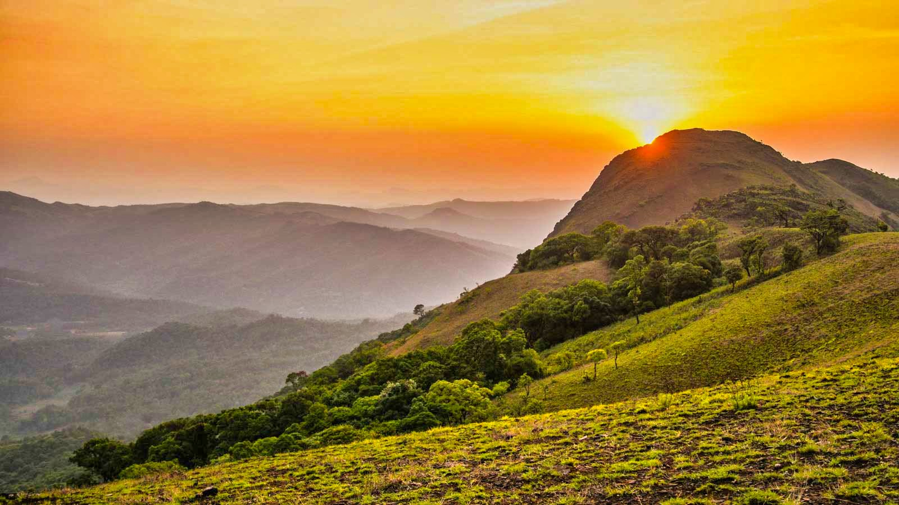
Chikmagalur is a town in the Chikmagalur District in the Indian state of Karnataka. It is conveniently close to the state's hilly wetlands in the Malnad Area. Although there is no Chikmagalur beach, yet there is plenty to explore here including incredible peaks, gurgling waterfalls and intricately-designed temples. So, plan your trip to this incredible destination and get ready for Chikmagalur sightseeing. Also, Chikmagalur is famous for its sprawling coffee plantations.
Best Time to Visit Chikmagalur:October - February
Top Tourist Attractions:Jhari Waterfalls, Coffee Museum Near Chikmagalur, Baba Budangiri, Ballalarayana Durga Fort, Shri Kalaseshwara Swami Temple
Things to Do in Chikmagalur:Adventure, Hills & Mountains, Wildlife, Trek, Memorable Experiences, Relaxation, Romantic
24.Mysore
 Mysore is situated about 140 km from Bangalore. Mysore Karnataka is spellbinding people around the globe with its rich heritage, prettily laid gardens, pretty charm, broad avenues, magnificent palaces, holy temples, and imposing buildings. Mysore is a major city in Karnataka that touches every person. Mysore is famous for incense, sandalwood, sculptures, and silk sarees. The city has several palaces and the main Mysore palace is Amba Vilas palace, accredited for its stunning monuments
Best Time to Visit Mysore:October - March
Top Tourist Attractions:Mysore Palace, Mysore Zoo, Brindavan Gardens, Chamundi hills
Things to Do in Mysore:Sandalwood, Silk Sarees & stone sculptures
Mysore is situated about 140 km from Bangalore. Mysore Karnataka is spellbinding people around the globe with its rich heritage, prettily laid gardens, pretty charm, broad avenues, magnificent palaces, holy temples, and imposing buildings. Mysore is a major city in Karnataka that touches every person. Mysore is famous for incense, sandalwood, sculptures, and silk sarees. The city has several palaces and the main Mysore palace is Amba Vilas palace, accredited for its stunning monuments
Best Time to Visit Mysore:October - March
Top Tourist Attractions:Mysore Palace, Mysore Zoo, Brindavan Gardens, Chamundi hills
Things to Do in Mysore:Sandalwood, Silk Sarees & stone sculptures
25.Bangalore
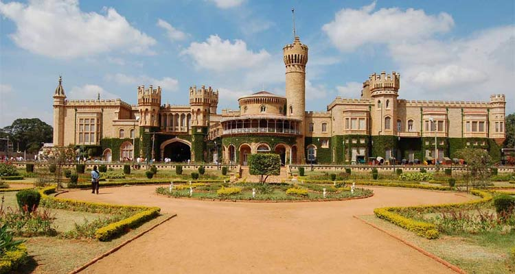
Bangalore, the major IT exporter in India and one of the world's top metropolises, is now the third most populated city in India. This bustling metropolis was established in 1537. Bengaluru has emerged as a modern Indian city with many parks and broad streets. In fact, Bangalore is famous for its IT startups and MNCs, thus earning the label: Silicon Valley of India. Bangalore city is a combination of cutting-edge technology with historic significance as reflected by the Bangalore tourist spots. In addition to business-class hotels, there are several family resorts in Bangalore as well.
Best Time to Visit Bangalore:November to February
Top Tourist Attractions:Bannerghatta Biological Park, Rameshwara Temple, Savandurga, Karnataka, Karnataka Chitrakala Parishath, Lepakshi, Andhra Pradesh
Things to Do in Bangalore:Heritage, Food & Culture, Memorable Experiences
26.Rameswaram
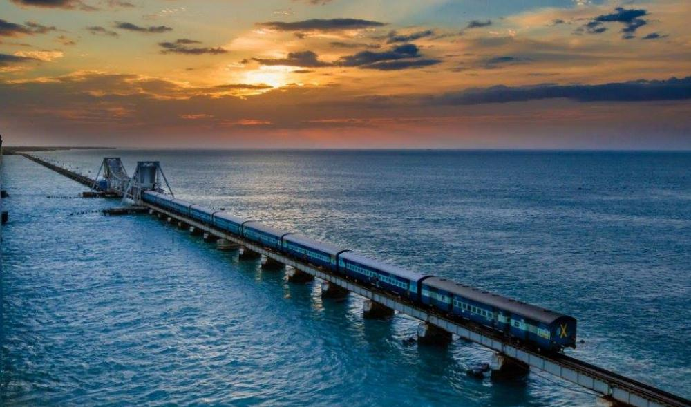
Rameswaram is a town on Pamban Island, in the southeast Indian state of Tamil Nadu. It’s known for Ramanathaswamy Temple, a Hindu pilgrimage site with ornate corridors, huge sculpted pillars and sacred water tanks. Devotees bathe in the waters of Agni Theertham, off the beach east of the temple. Gandamadana Parvatham is a hill with island views. A chakra (wheel) here is said to bear an imprint of Lord Rama’s feet.
Best Time to Visit Rameswaram:October - April
Top Tourist Attractions:Arulmigu Ramanatha Swamy Temple,Dhanushkodi Beach Point,Pamban bridge,Dr. A.P.J. Abdul Kalam Memorial,Annai Indira Gandhi Road Bridge,Villoondi Tirtham,Former President A.P.J. Abdul Kalam House,Adam's Bridge - Rama Setu.
Things to Do in Rameswaram:Heritage, Food & Culture
27.Thrissur
 Thrissur offers a blend of religious diversity along with a cultural extravaganza. This city is situated in the heart of Kerala and was formerly known as Thirusivapperoor. It was later known by another name, Trichur, an anglicized name given by Britishers. This city is home to a huge population of approximately 1.8 million Indians. This city takes the 20th rank in the list of largest cities in India and is also loved by tourists due to the several tourist sites in the city.
This is Kerala's fourth-largest city and is influenced by a variety of religions, including Hinduism, Christianity, Buddhism and Jainism as well as some European religions, resulting in the creation of a conglomerate religious body. This city has a significant economic impact on Kerala, as it is home to a number of large corporations as well as the headquarters of a few top-tier banks. Every year, a large number of tourists commute and explore the tourist sites in the city to experience its natural beauty and magnificent celebrations.
Best Time to Visit Thrissur:December to January
Top Tourist Attractions:Kerala Kalamandalam, Shakthan Thampuran Palace, Thrissur Zoo and State Museum, C'sons RepEat, CASINO HOTEL
Things to Do in Thrissur:Food & Culture, Party and Nightlife
Thrissur offers a blend of religious diversity along with a cultural extravaganza. This city is situated in the heart of Kerala and was formerly known as Thirusivapperoor. It was later known by another name, Trichur, an anglicized name given by Britishers. This city is home to a huge population of approximately 1.8 million Indians. This city takes the 20th rank in the list of largest cities in India and is also loved by tourists due to the several tourist sites in the city.
This is Kerala's fourth-largest city and is influenced by a variety of religions, including Hinduism, Christianity, Buddhism and Jainism as well as some European religions, resulting in the creation of a conglomerate religious body. This city has a significant economic impact on Kerala, as it is home to a number of large corporations as well as the headquarters of a few top-tier banks. Every year, a large number of tourists commute and explore the tourist sites in the city to experience its natural beauty and magnificent celebrations.
Best Time to Visit Thrissur:December to January
Top Tourist Attractions:Kerala Kalamandalam, Shakthan Thampuran Palace, Thrissur Zoo and State Museum, C'sons RepEat, CASINO HOTEL
Things to Do in Thrissur:Food & Culture, Party and Nightlife
28.Coimbatore
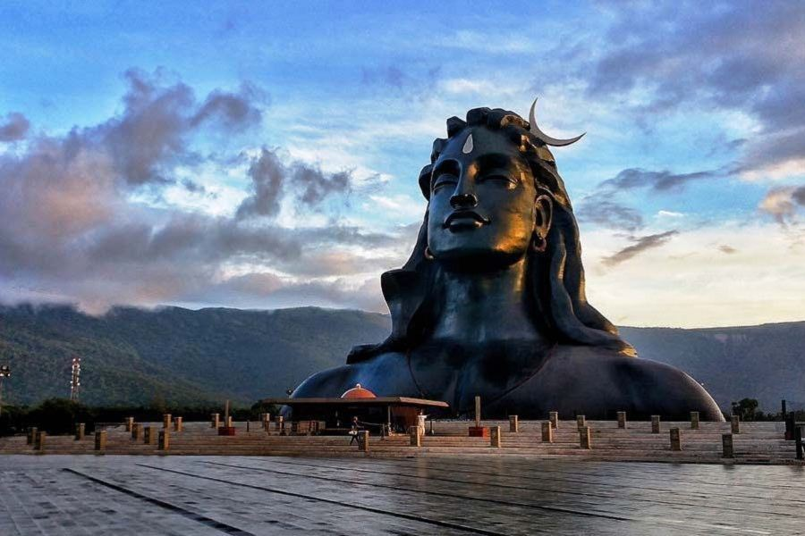
Coimbatore is a city in Tamil Nadu, a state in Southern India. Geographically, the city ranks as the state's second-largest. By population, it ranks as India's 15th biggest city, making it a metropolitan area. The city is known as the “Manchester of South India” because of its prominence as an industrial centre in the country. Coimbatore is famous for its educational and industrial landscape that has shifted significantly during the past two decades.
Best Time to Visit Coimbatore:October to March
Top Tourist Attractions:Isha Yoga Center, GD Naidu Museum, Shop for High Quality Traditional Sarees, Arulmigu Eachanari Vinayagar Temple, Marudhamalai Hill Temple
Things to Do in Coimbatore:Heritage, Food & Culture